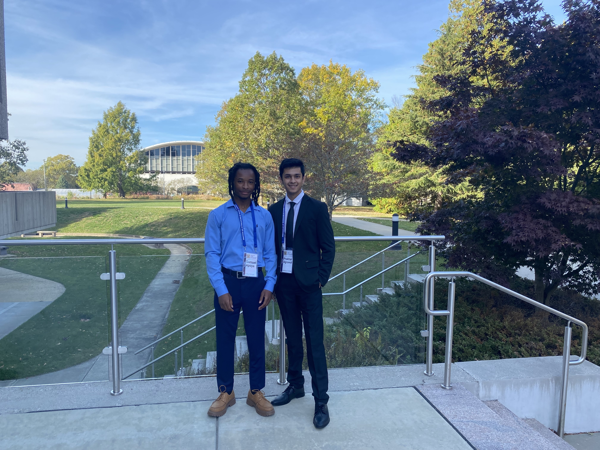
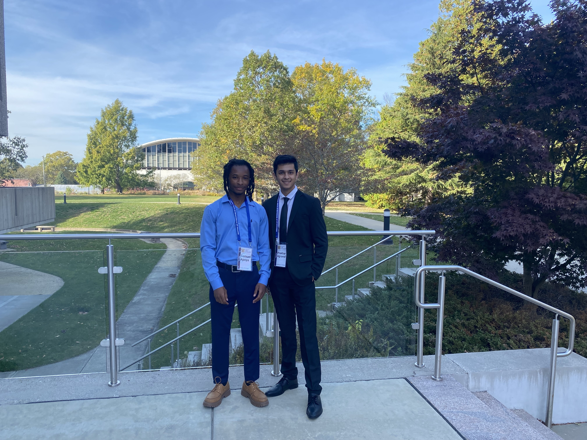
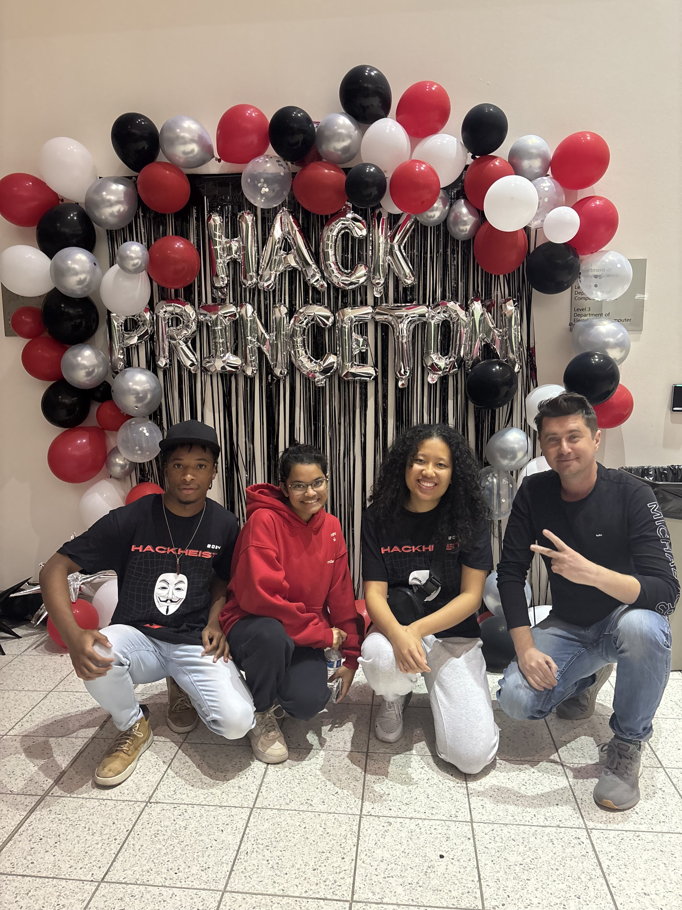
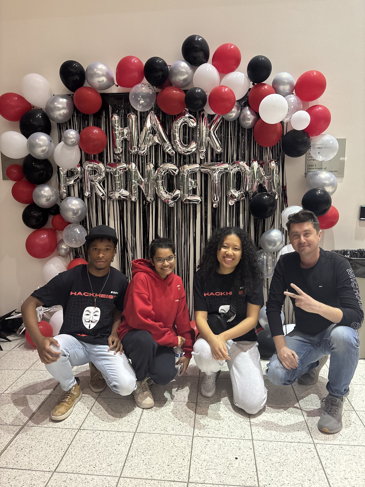

Portfolio
Problem: Students & professors struggle with managing advising appointments.
Solution: Built this platform to connect students with advisors, automate email notifications, and simplify getting meeting notes to students
Impact: Reduced scheduling time, number of missed sessions, and made meetings easy to manage.
Problem: Blind and low-vision museum visitors lack detailed artwork descriptions to engage with visual art.
Solution: Together with my professor we developed a web application using fine-tuned LLaMA models to generate rich, contextual artwork descriptions for museums.
Impact: Presented at AI Symposium 2025, demonstrating improvement in description quality over standard models.
Problem: Individual investors lack sophisticated portfolio risk analysis tools used by professional fund managers.
Solution: Created AI agent analyzing portfolios using ML models to assess risk levels and provide diversification recommendations.
Impact: Processes portfolio analysis in under 30 seconds, identifying hidden risk concentrations with 85% accuracy.
Problem: Colleges and IT support centers lack fine-tuned AI systems to handle common IT support queries, leading to high ticket volumes and slow response times.
Solution: Built NLP-powered chatbot using fine-tuned LlaMA to provide answers to common questions encountered at IT support centers at college settings
Impact: Allows for easy access to IT support, reducing ticket volume and improving response times for common issues.
Experience
Research Assistant
Conducting research on multimodal AI systems for accessibility applications under Dr. Stacy Doore. Fine-tuning vision-language models to generate artwork descriptions for blind and low-vision museum visitors.
Teaching Assistant
Teaching Machine Learning and Software Engineering courses to undergraduate students. Providing guidance on course material, grading assignments, and supporting student learning.
Software Engineering & Research Intern
Developed backend systems with Java, AWS, and NLP technologies. Researched on RAG systems to reduce, achieving significant reduction in hallucinations.
Research Intern
Analyzed environmental data for sustainable seaweed farming using Temporal Convolutional Networks. Processed and visualized large datasets to identify optimal growing conditions.
IT Support Intern
Provides technical support to students and faculty. Troubleshoots hardware and software issues, manages IT tickets, and maintains computer software.
Highlights
 

🎓 AI Liberal Arts Symposium '25
Connecticut College
Presented research on accessible AI applications for museum visitors with visual impairments.
October 2024 


HackPrinceton Fall '24
Best Hack in Healthcare
Built QCare, an AI-powered healthcare assistant that won the top healthcare prize among 500+ participants.
November 2024Let's Work Together
I'm open to research collaborations, software engineering opportunities, and interesting projects. Whether you're looking to discuss AI accessibility, full-stack development, or potential positions, I'd love to hear from you.